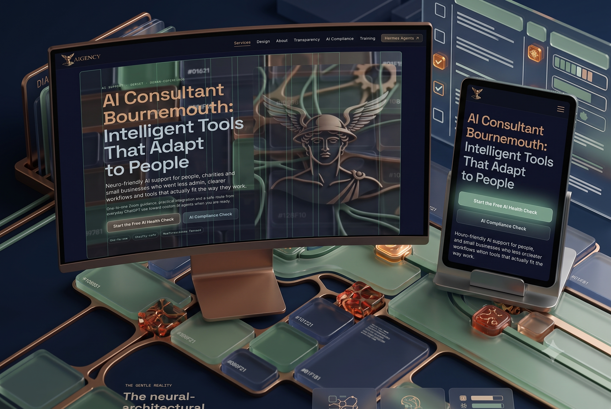
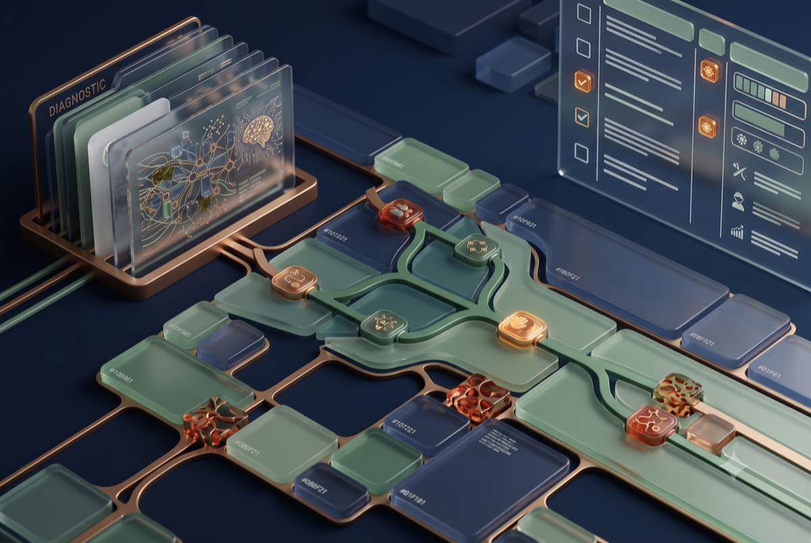
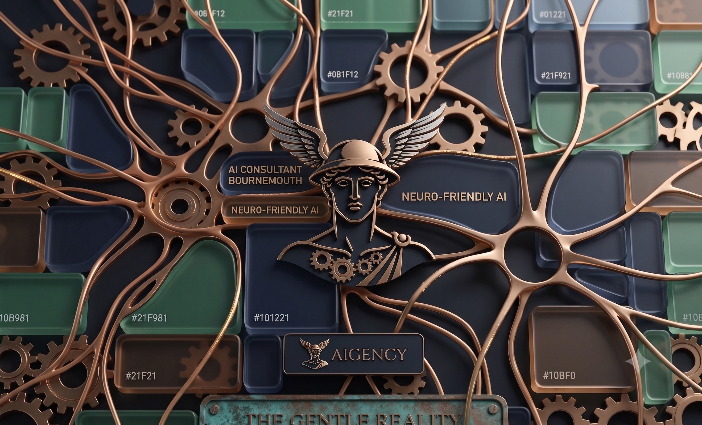

PORTFOLIO IN PREPARATION · SAMPLE CONCEPTS
Sample directions while the portfolio is prepared
No client work is presented here as live case-study evidence yet. These clearly labelled concepts show the kinds of systems and visual decisions we can explore with a project.

Concept A · Web + mobile
Local service platform
A conversion-focused site with service discovery, enquiry routing and a content structure designed for local search.

Concept B · Operations
Operational dashboard
A calm interface for turning incoming requests into visible tasks, owners and next actions.

Concept C · Agent systems
Agent control surface
A human-readable interface for viewing an agent’s status, permissions, memory and escalation points.